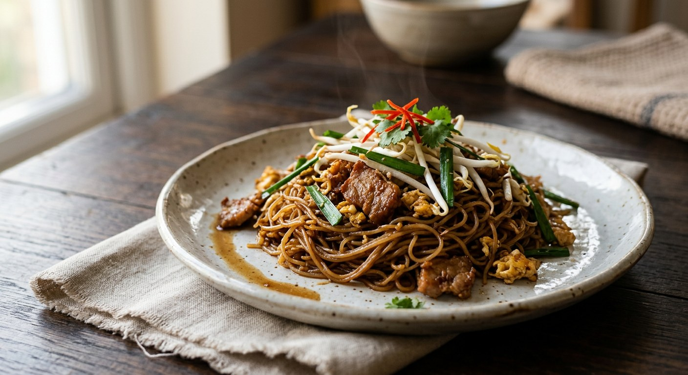

Dried Korat rice vermicelli stirred over a low flame into a tamarind, palm sugar and fermented soybean paste sauce with pork belly — pad thai's country cousin, minus the egg, minus the fuss.

Korat — Nakhon Ratchasima, the gateway to Isaan — is rice country, and the dish is the province's answer to a surplus. As Kapook tells it, Korat grew so much rice that the local kitchen turned it into noodles and sun-dried them to keep, and the noodle-making villages became names: เส้้นหมี่ตะคุ at Pak Thong Chai, เส้นหมี่พิมาย at Phimai, เส้นหมี่กุดจิก at Sung Noen. The dried noodle is the dish — sources are emphatic that you cannot make pad mi korat from just any vermicelli.
The fry itself is a one-pan affair with a strict sense of itself. Every source points at the same comparisons: it looks like pad thai, but it takes no egg and carries fewer toppings — beansprouts and spring onion, plus whatever the kitchen adds. Kapook's history: in the old days it was made for merit-making and ordination feasts, the noodle handed out to guests at weddings and temple gatherings. Wongnai's version is even simpler — shallots, palm sugar, fish sauce, fermented soybean paste and tamarind, no paste, no pork unless you want it.
It is also a dish with a famous temperament. The sauce is sharp with tamarind, deep with tao jiew (fermented soybean paste) and palm sugar, and the noodles must be coaxed — every source repeats the same warning, that high heat turns the dried bundles into a sodden lump, and the noodles must absorb the sauce over the lowest flame your stove can manage. Get that right and the dish rewards you with what Wongnai calls its signature: springy, chewy noodles coated in a sauce that is sour, sweet, salty and hot in one bite. Korat eats it hot, with a lime wedge — or, as Kapook's Isaan friends suggest, next to a plate of som tam.
| Thai | English | Amount |
|---|---|---|
| เส้นหมี่โคราช (แห้ง) | Dried Korat rice vermicelli bundles | 200 g |
| พริกแห้ง | Dried red chillies | 8–10 |
| กระเทียมไทย | Thai garlic | 8 cloves |
| หอมแดง | Shallots | 3 |
| หมูสามชั้น | Pork belly, sliced | 150 g |
| น้ำมันหมู | Lard (or vegetable oil) | 3 tbsp |
| น้ำตาลปี๊บ | Palm sugar | 2 tbsp |
| น้ำปลา | Fish sauce | 1 tbsp |
| เต้าเจี้ยว | Fermented soybean paste (tao jiew) | 1 tbsp |
| น้ำมะขามเปียก | Tamarind water | 3 tbsp |
| น้ำเปล่า | Water | 400 ml |
| ถั่วงอก | Beansprouts | 100 g |
| ต้นหอม | Spring onions, chopped | 2 |
| มะนาว | Lime, cut into wedges, to serve | 1 |
The no-paste version (Wongnai): 1 noodle bundle, 3 tbsp oil, 4 shallots, 2 tbsp palm sugar, 1 tbsp fish sauce, 1 tbsp tao jiew, 3 tbsp tamarind water and a glass of water — fried, then finished with dried chilli powder and garlic chives. The TomJoke version (TrueID): renders its own fat from 150 g pork belly, no added oil, and seasons with dark soy instead of fish sauce — plus 5 tbsp tamarind water and chilli powder. The Tamahan Easy original (Pantip, 1 plate): 100 g noodles, 100 g pork belly, 4 tbsp lard, 1 tbsp toddy palm sugar, and a pounded chilli–garlic–shallot paste to start.
The paste. Kapook's and Pantip's Tamahan Easy recipe pounds dried chillies, garlic and shallots into a curry-style paste and fries it first. Wongnai's Beambm skips the paste entirely — shallots in the oil, dried chilli powder at the end. TrueID lands in the middle: shallots only, plus chilli powder in the seasoning. The paste version is deeper and redder; the shallot version is the quicker weekday fry.
The fat. Tamahan Easy (Kapook, Pantip) fries in 4 tbsp of lard. Wongnai uses 3 tbsp of vegetable oil. TrueID adds no fat at all — it renders the pork belly first and fries the shallots in the pork fat that comes out. All three roads lead to the same glossy sauce.
The salty seasonings. Kapook, Pantip and Wongnai season with fish sauce plus tao jiew. TrueID's version uses dark soy and no fish sauce at all, relying on tao jiew for salt and the dark soy for colour. Both are recognisably the same dish — tao jiew is the one ingredient nobody omits.
The tamarind. Two tablespoons (Tamahan Easy), three (Wongnai), five (TrueID). Kapook's advice covers the spread: the sauce should be sharp — the noodles will carry the sour into the finish, so err towards the high side if your tamarind is mild.
The greens. Wongnai finishes with garlic chives; Kapook, Pantip and TrueID use spring onion and beansprouts. Kapook's serving note adds raw beansprouts, spring onion and lime on the side — the same garnish every street stall in Korat puts on the plate.
This recipe is translated from the following Thai-language sources. Where they disagree, we've said so.
1. Kapook Cooking — "ผัดหมี่โคราช สูตรต้นตำรับเส้นไม่แฉะไม่ติดเป็นก้อน พร้อมสูตรน้ำปรุง" (the history of the dish; the Tamahan Easy authentic recipe used here) — cooking.kapook.com
2. Pantip — "ผัดหมี่โคราช...สูตรโคราชแท้ๆดั้งเดิม" topic 40560829 by Tamahan (the original post of the same recipe; the low-flame rule) — pantip.com
3. Wongnai — "วิธีทำ ผัดหมี่โคราช เมนูเส้นเหนียวนุ่มโดนใจ น้ำซอสรสเด็ดแบบต้นตำรับ!" by Beambm (the no-paste version; no egg, fewer toppings) — wongnai.com
4. TrueID Food — "สูตรทำผัดหมี่โคราช พร้อมเคล็ดลับเส้นสวย อร่อยเหนียวนุ่ม ไม่เป็นก้อน" (TomJoke FoodTV; the pork-fat-rendered version with dark soy) — food.trueid.net